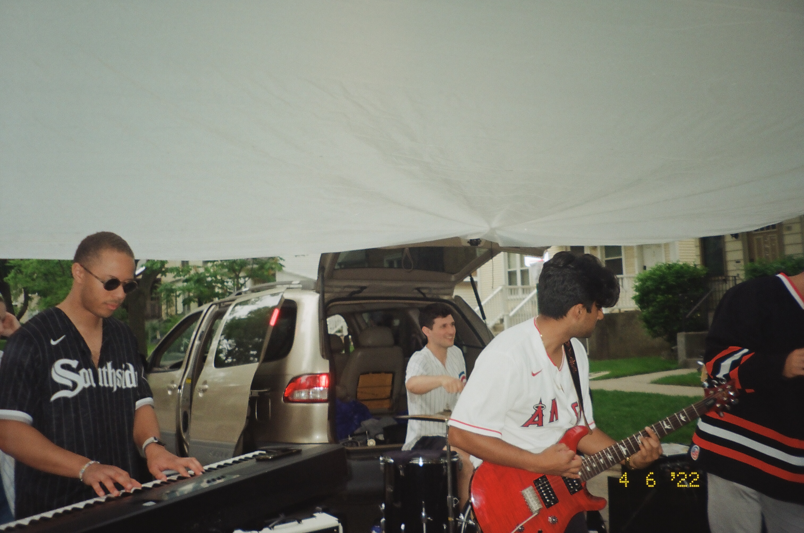
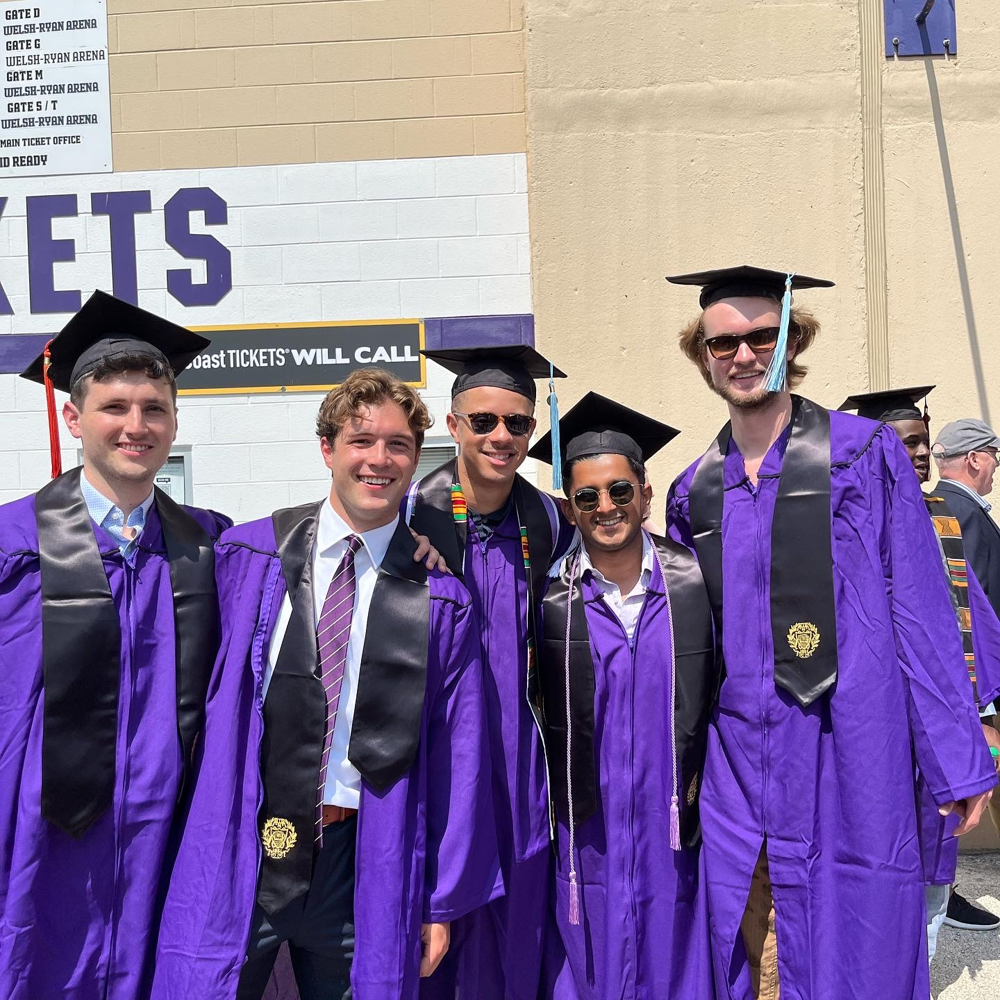
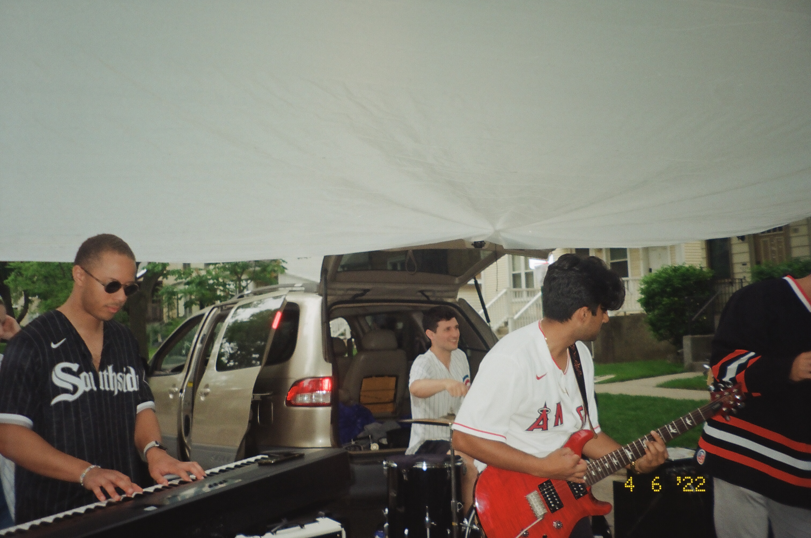
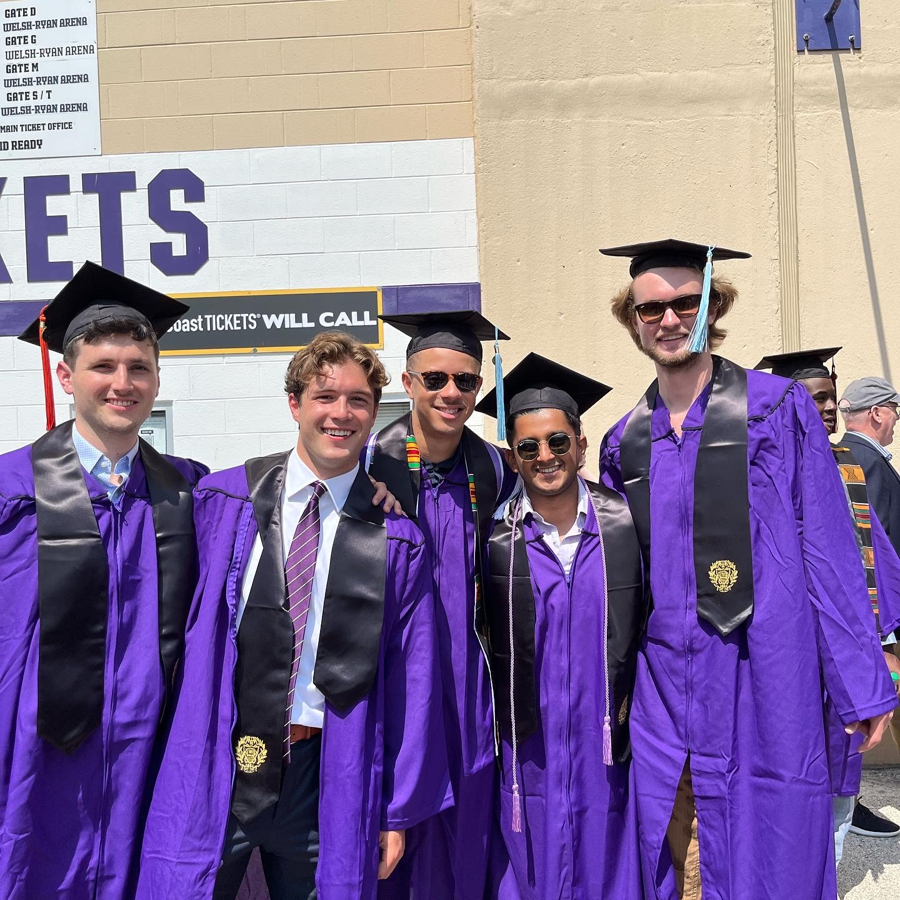

[recording] [slides]
Speaker at Space Draft #107, Tucson's flavor of astronomy on tap.
Captained the Steward Observatory team to an intramural championship in Summer 2025!
Check us out on Spotify
Find us on Instagram


 


